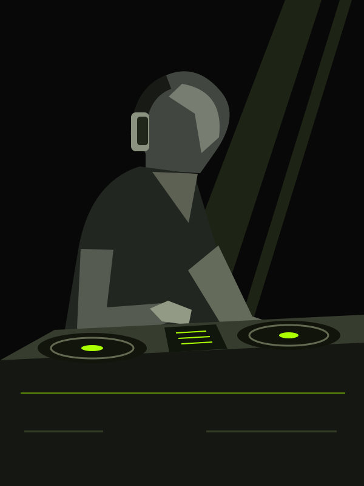

SIGNAL FOUND / ENTER THE FREQUENCY
VØID
TECHNO · INDUSTRIAL · AMBIENT
MORE FREQUENCY.EXPLORE THE SOUND ↓
SELECTED
WORKS.
Track titles from the brief. Play buttons generate original 8-second sound sketches, not recordings or commercial releases. Keep volume low.
AFTER
DARK.
No matching shows.
+ PAST SHOWS / CONCEPT ARCHIVE
Berlin · Studio session / London · Warehouse study / Amsterdam · Listening room
Illustrative archive; no performance history or venue affiliation asserted.
04 / ARTIST
BETWEEN
IMPACT &
SILENCE.
VØID is a fictional Berlin-based DJ and producer persona at the intersection of industrial techno, dub and ambient space.
A study in tension: mechanical repetition, spare textures, long transitions. Club science, with room to breathe.
Original artist concept. No label affiliation, residency, show history or representation is claimed.

TRANSMISSIONS.
06 / ENQUIRIES
MAKE
CONTACT.
For event ideas, festival concepts,
residencies and press conversations.
Fictional artist. Use sample contact details.
No agent, delivery or response time is implied.